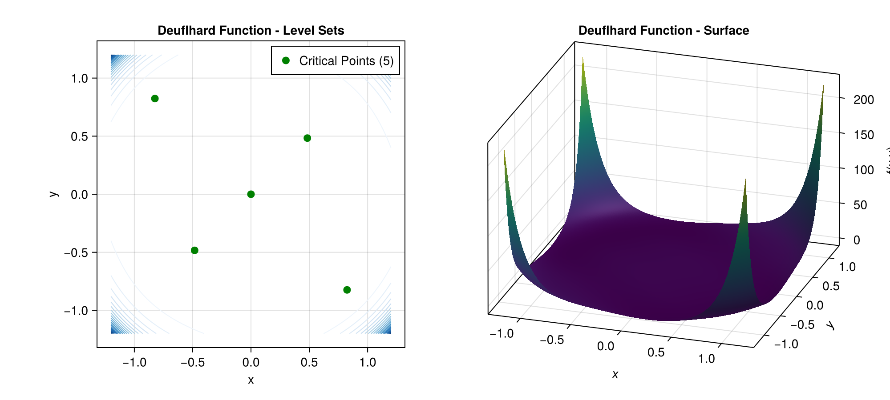

Examples
Every code block on this page is executed when the documentation is built, so the output shown is real.
A complete example
The full workflow on a smooth four-well objective — approximate, find every critical point, then keep the minima:
using Globtim, DynamicPolynomials, HomotopyContinuation
# Four-well objective: global minima at (±1, ±1), a maximum at the origin, four saddles.
f(x) = (x[1]^2 - 1)^2 + (x[2]^2 - 1)^2
TR = TestInput(f, dim=2, center=[0.0, 0.0], sample_range=1.5) # search box [-1.5, 1.5]²
pol = Constructor(TR, 8) # degree-8 Chebyshev fit
@polyvar x[1:2]
sols = solve_polynomial_system(x, pol) # solve ∇p = 0
df = process_crit_pts(sols, f, TR) # → true critical points of f
df_enhanced, df_min = analyze_critical_points(f, df, TR; enable_hessian = true, verbose = false)
println("L² approximation error : ", round(pol.nrm, sigdigits = 3))
println("critical points found : ", size(df, 1))
println("minima found : ", size(df_min, 1))┌ Warning: Runtime invalidation was disabled, but the CPU info is out-of-date.
│ Will continue with incorrect CPU name (from build time).
└ @ HostCPUFeatures ~/.julia/packages/HostCPUFeatures/ZTXz4/src/cpu_info.jl:71
L² approximation error : 2.3e-15
critical points found : 9
minima found : 4Degree 8 recovers this quartic essentially exactly (pol.nrm ≈ 1e-15), and Globtim finds all nine critical points — the four global minima at (±1, ±1), plus four saddles and the central maximum. The recovered minima:
using DataFrames # nrow/eachrow come from DataFrames, which analyze_critical_points returns
sort!(df_min, [:x1, :x2])
[(round(r.x1, digits = 3), round(r.x2, digits = 3)) for r in eachrow(df_min)]4-element Vector{Tuple{Float64, Float64}}:
(-1.0, -1.0)
(-1.0, 1.0)
(1.0, -1.0)
(1.0, 1.0)Runnable demo scripts
Self-contained scripts ship in the examples/ directory. Run any of them from a project that has Globtim installed (e.g. julia examples/custom_function_demo.jl):
| Script | What it shows |
|---|---|
custom_function_demo.jl | Define a custom 2D objective, build the approximation, find critical points |
quick_subdivision_demo.jl | Adaptive subdivision on sphere / Rosenbrock / Rastrigin / anisotropic |
domain_sweep_demo.jl | Sweep over domain sizes for a fixed objective |
high_dimensional_demo.jl | 3D / 4D scaling behaviour |
scalar_function_demo.jl | 1D scalar functions |
sparsification_demo.jl | Polynomial coefficient sparsification |
anisotropic_grid_demo.jl | Anisotropic Chebyshev / Legendre grids |
basis_comparison.jl | Chebyshev vs Legendre nodes / convergence on the 1D Runge function |
For an end-to-end tour across the whole package family (find → refine → plot), see the Ecosystem Walkthrough.
Custom objectives
Any function that accepts a vector x and returns a scalar works. Here a tilted double-well finds its two minima:
using Globtim, DynamicPolynomials, HomotopyContinuation
g(x) = (x[1]^2 - 1)^2 + x[2]^2 + 0.3 * x[1] # tilt breaks the symmetry between the wells
TR = TestInput(g, dim = 2, center = [0.0, 0.0], sample_range = 1.5)
pol = Constructor(TR, 8)
@polyvar x[1:2]
df = process_crit_pts(solve_polynomial_system(x, pol), g, TR)
_, df_min = analyze_critical_points(g, df, TR; enable_hessian = true, verbose = false)
println("minima: ", size(df_min, 1), " (global at the deeper, tilted-down well)")minima: 2 (global at the deeper, tilted-down well)1D functions with scalar input
For dim = 1, Globtim accepts ordinary scalar functions (sin, cos, …):
using Globtim, DynamicPolynomials, HomotopyContinuation
f = x -> sin(3x) + 0.1x^2
TR = TestInput(f, dim = 1, center = [0.0], sample_range = Float64(π))
pol = Constructor(TR, 12)
@polyvar x[1:1]
df = process_crit_pts(solve_polynomial_system(x, pol), f, TR)
_, df_min = analyze_critical_points(f, df, TR; enable_hessian = true, verbose = false)
println("critical points: ", size(df, 1), " minima: ", size(df_min, 1))[ Info: 🚀 lambda_vandermonde_original: Using OPTIMIZED recurrence (Float type)
┌ Warning: Gradient computation failed for 6/6 points
│ failed_points =
│ 5-element Vector{Int64}:
│ 1
│ 2
│ ⋮
│ 5
│ error_types =
│ 1-element Vector{String}:
│ "MethodError"
└ @ Globtim ~/work/Globtim.jl/Globtim.jl/src/refine.jl:167
┌ Warning: Hessian computation failed for 6/6 points
│ failed_points =
│ 5-element Vector{Int64}:
│ 1
│ 2
│ ⋮
│ 5
│ error_types =
│ 1-element Vector{String}:
│ "MethodError"
└ @ Globtim ~/work/Globtim.jl/Globtim.jl/src/hessian_analysis.jl:48
critical points: 6 minima: 0Domain size matters
Globtim finds the critical points inside the search box. Widen the box to capture more of them, and use a rectangular box (sample_range as a vector) for anisotropic domains:
TR = TestInput(f, dim = 2, center = [0.0, 0.0], sample_range = 1.5) # square [-1.5, 1.5]²
TR = TestInput(f, dim = 2, center = [0.0, 0.0], sample_range = [2.0, 1.0]) # rectangle [-2,2]×[-1,1]High-dimensional problems (3D / 4D)
The same workflow scales to 3D and 4D. Practical tips:
- Reduce the polynomial degree as dimension grows (4D → degree 4–6 is often enough for smooth objectives).
- Use
precision = AdaptivePrecisionwhen you need higher-accuracy coefficients (e.g. for sparsification or the symbolic solver). - Pass
enable_hessian = falsetoanalyze_critical_pointsfor a faster pass when you only need the minima.
See high_dimensional_demo.jl for a worked 3D/4D scaling example.
Visualization
Plotting the polynomial level set with critical points overlaid lives in the GlobtimPlots package. Load a Makie backend (CairoMakie for static files, GLMakie for interactive windows) before calling any plot function:
using GlobtimPlots, CairoMakie
apol = adapt_polynomial_data(pol) # adapt Globtim objects for plotting
ainp = adapt_problem_input(TR)
fig = cairo_plot_polyapprox_levelset(apol, ainp, df_enhanced, df_min)
CairoMakie.save("levelset.png", fig)See the GlobtimPlots repository for the full set of plot types (Morse spectra, subdivision partitions, convergence sweeps).
Statistical analysis and tables
Enhanced statistics and CSV / Markdown / LaTeX table export live in GlobtimPostProcessing, which consumes the df_enhanced DataFrame produced above:
using GlobtimPostProcessing
export_analysis_tables(tables, "critical_point_analysis", output_dir; formats = [:csv, :markdown, :latex])Test-function gallery
Globtim on the Deuflhard test function — sample grid, polynomial approximant, and recovered minima:

More benchmark objectives (Beale, Branin, Hölder Table, …) are available as built-in test functions; see the FUNCTION_REGISTRY and examples/ scripts to reproduce them.
Next steps
- Getting Started — basic concepts and setup
- Core Algorithm — the mathematical approach
- API Reference — the rendered function reference
- Precision — precision types and trade-offs
- Sparsification — polynomial complexity reduction